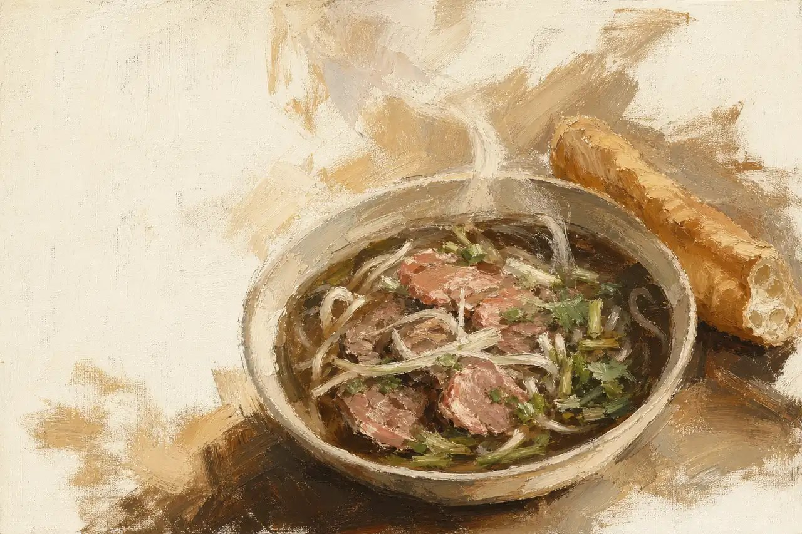

The music cuts dead on the phở. Hairlines draw from each real ingredient to where it sits in the painting, labels in Lora, numbers in Be Vietnam Pro: rice noodles 280 g, broth 550 g, rare beef 160 g, herbs 15 g → 559 kcal.
Sound: Silence, then a graphite scratch per hairline and a wooden tink per number.
From: Claude Fable 5 (a hard audio stop and a 1.2 s hold on one image).